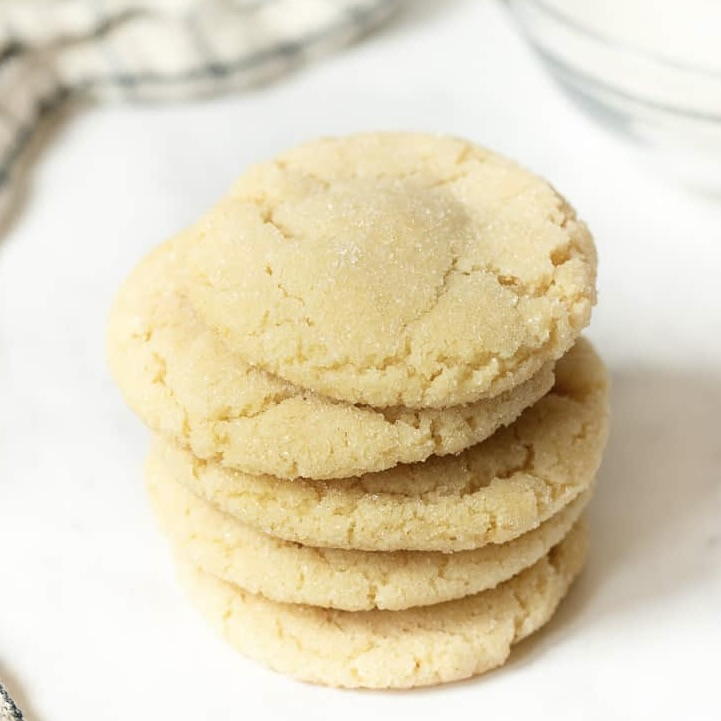

photo from: dessertfortwo.com/eggless-sugar-cookies/"
Description
This recipe is taken from Christina Lane's Dessert for Two at dessertfortwo.com/eggless-sugar-cookies/"
This sugar cookie recipe is easy to make, and eggless! The recipe rquires only
one bowl, and doesn't require chillling!
Ingredients
- 4 tbsp unsalted butter, melted
- 1 tbsp cream cheese, softened
- 1/3 c. granulated sugar, plus extra for rolling
- 1/2 tsp vanilla extract
- 1/2 c. + 2 tbsp all-purpose flour
- 1/4 tsp baking soda
- 1/8 teaspoon fine sea salt
Steps
-
Preheat the oven to 350° F, and line a standard
sized sheet pan with parchment paper. Gather ingredients.
-
In a medium bowl, beat with an electric mixer the melted butter,
cream cheese, granulated sugar and vanilla extract until homogenized
and fluffy
-
Next, sprinkle the flour, baking soda and sea sale on top. Beat
in just to combine; do not over mix.
-
Divide the mixture into 6-7 dough balls, and roll into balls.
-
Roll each ball in extra granulated sugar before placing evenly
spaced on the baking sheet.
-
Bake for 10-11 minutes. They will be puffy when you remove
them from the oven and start to crack as they cool. Let cool on
the baking sheet for 5 minutes before moving to a wire rack to cool
completely.
Notes
Store any leftover cookies in an air-tight container at room
temperature for 2 days.